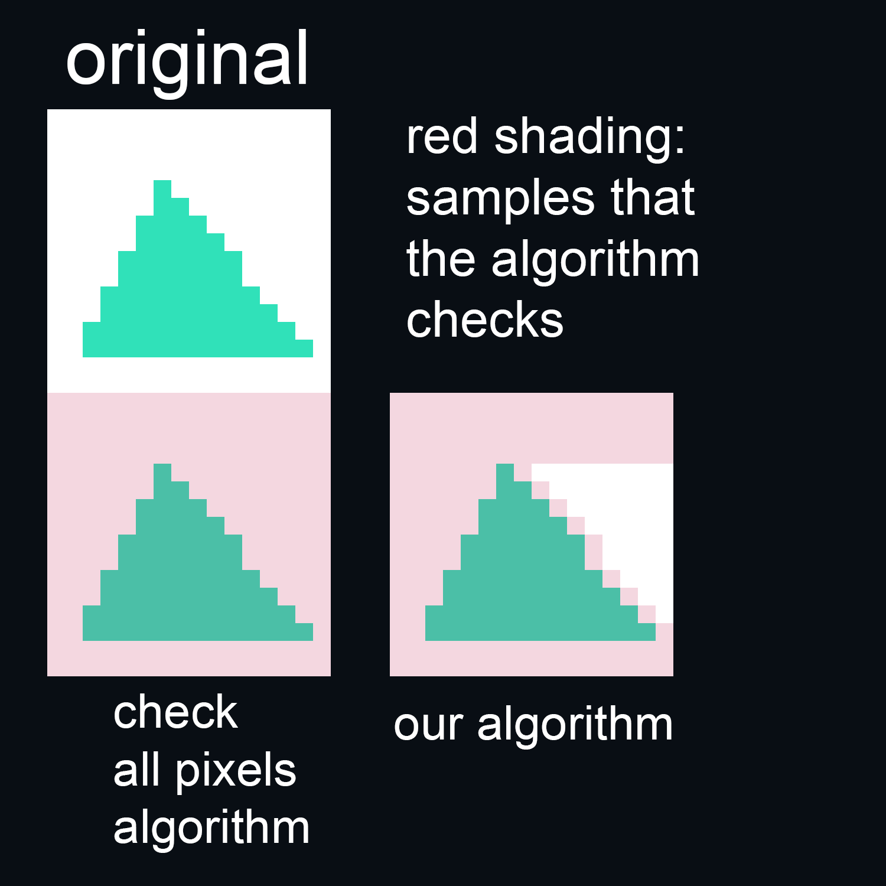
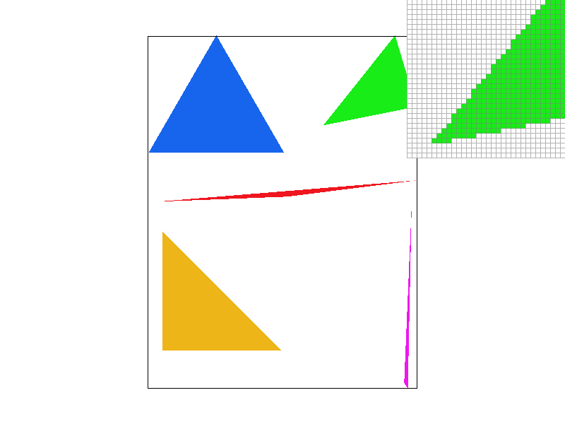
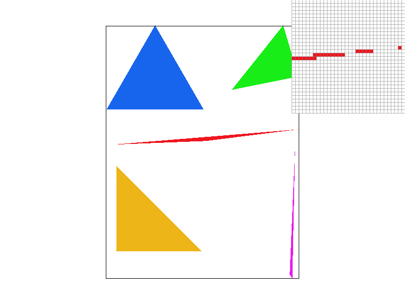

Overview
Give a high-level overview of what you implemented in this project. Think about what you've built as a whole. Share your thoughts on what interesting things you've learned from completing the project.
Section I: Rasterization
Part 1: Rasterizing single-color triangles
Walk through how you rasterize triangles in your own words.
In this part, we rasterized the triangles by utilizing the line test we went over in lecture. More specifically, our algorithm goes line by line, uses the line test to see if that sample lies within the triangle or not, and stops checking that line once it sees a sample that’s no longer in the triangle. Then it moves onto the next line, and so on until all the lines that make up the triangle have been checked.
Explain how your algorithm is no worse than one that checks each sample within the bounding box of the triangle.
Our algorithm is no worse than one that checks every sample in the triangle’s bounding box because it won’t ever check every single pixel in the bounding box. I think this is easier to demonstrate with a picture: see below.
|

|
Show a png screenshot of basic/test4.svg with the default viewing parameters and with the pixel inspector centered on an interesting part of the scene.
I don’t understand what part of this scene of colored triangles would qualify as “interesting”, so I took two screenshots just in case our tastes differ.

|
|
|

|

|
Here is an example 2x2 gridlike structure using an HTML table. Each tr is a row and each td is a column in that row. You might find this useful for framing and showing your result images in an organized fashion.

|

|

|

|
Part 2: Antialiasing triangles
Part 3: Transforms
• Create an updated version of svg/transforms/robot.svg with cubeman doing something more interesting, like waving or running. Feel free to change his colors or proportions to suit your creativity. Save your svg file as my_robot.svg in your docs/ directory and show a png screenshot of your rendered drawing in your write-up. Explain what you were trying to do with cubeman in words.
|
|
"Talk is cheap," so here is a picture explaining what I tried to do instead:
|
|
I used Illustrator to pose the robot to my fancy. I know one could go into the SVG file and hand-alter the values one-by-one as well, but that's not as fun. Cubeman's red is based on the color of Ryu's headband.
Section II: Sampling
Part 4: Barycentric coordinates
Part 5: "Pixel sampling" for texture mapping
Part 6: "Level sampling" with mipmaps for texture mapping
Section III: Art Competition
If you are not participating in the optional art competition, don't worry about this section!